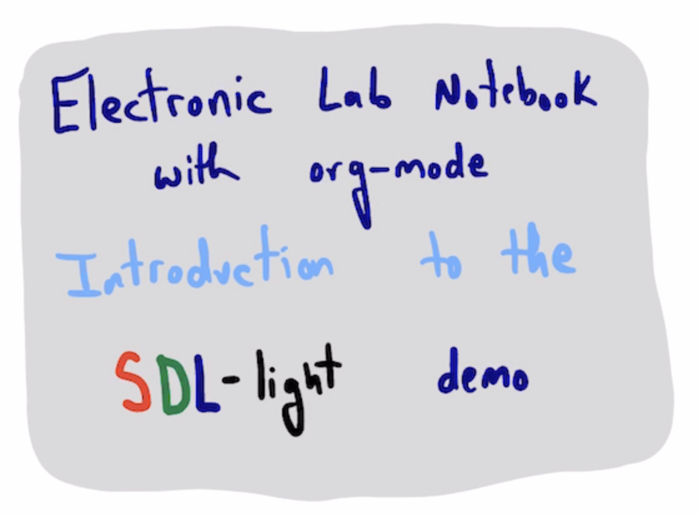

Table of Contents
1. SDL-light demo

There is a Google Colab outlining a free self-driving lab demo cite:&baird-2022-what-is at https://colab.research.google.com/github/sparks-baird/self-driving-lab-demo/blob/main/notebooks/4.2-paho-mqtt-colab-sdl-demo-test.ipynb. I like the idea, but I found the notebook hard to follow, especially for a total beginner. I developed a simpler library (1.3) below to explore using org-mode for an electronic laboratory notebook.
This first post simply introduces the "instrument", and some basic use of org-mode so we have something to talk about.
1.1. The "instrument"
You can see details about the instrument in the Colab link above. The gist is we can send three integers to light up R, G, and B LEDs at different intensities. The instrument has spectrometer that measures the intensities at 8 frequencies. Here are the 8 channels and frequencies (in nm) that are measured.
from mysdl import * CHANNEL_NAMES
| ch410 | ch440 | ch470 | ch510 | ch550 | ch583 | ch620 | ch670 |
To make a "measurement" we simply call our function, and it sends the integers, and eventually returns an array of 8 float numbers for the intensities in each channel. It takes 5-12 seconds to run this experiment.
measure(0, 100, 0)
---------------------------------------------------------------------------
Empty Traceback (most recent call last)
File ~/anaconda3/lib/python3.11/site-packages/self_driving_lab_demo/utils/observe.py:106, in mqtt_observe_sensor_data(R, G, B, atime, astep, gain, pico_id, session_id, timeout, queue_timeout, client, username, password, hostname, port, tls, mongodb, extra_info)
105 try:
--> 106 sensor_data = sensor_data_queue.get(True, queue_timeout)
107 except Empty as e:
File ~/anaconda3/lib/python3.11/queue.py:179, in Queue.get(self, block, timeout)
178 if remaining <= 0.0:
--> 179 raise Empty
180 self.not_empty.wait(remaining)
Empty:
The above exception was the direct cause of the following exception:
Empty Traceback (most recent call last)
Cell In[5], line 1
----> 1 measure(0, 100, 0)
File ~/Dropbox/emacs/projects/scimax-eln/sdl-light/mysdl.py:30, in measure(R, G, B)
10 def measure(R, G, B):
11 """Get a measurement from the SDL-light instrument
12
13 Parameters
(...)
28 410, 440, 470, 510, 550, 583, 620, and 670 nm.
29 """
---> 30 result = mqtt_observe_sensor_data(R, G, B,
31 pico_id=PICO_ID,
32 client=client)
33 background = np.array([result['background'][ch] for ch in CHANNEL_NAMES])
34 measured = np.array([result[ch] for ch in CHANNEL_NAMES])
File ~/anaconda3/lib/python3.11/site-packages/self_driving_lab_demo/utils/observe.py:108, in mqtt_observe_sensor_data(R, G, B, atime, astep, gain, pico_id, session_id, timeout, queue_timeout, client, username, password, hostname, port, tls, mongodb, extra_info)
106 sensor_data = sensor_data_queue.get(True, queue_timeout)
107 except Empty as e:
--> 108 raise Empty(
109 f"Sensor data retrieval timed out ({queue_timeout} seconds)"
110 ) from e
111 inp = sensor_data["_input_message"]
113 if (
114 isinstance(inp, dict)
115 and inp["_session_id"] == session_id
116 and inp["_experiment_id"] == experiment_id
117 ):
Empty: Sensor data retrieval timed out (60 seconds)
The output is saved as text (and in memory, but that is ephemeral). We can use some python magic to get the result here so we don't have to run it again (imagine if it takes a long time, or we only have enough reagent or time to do that one run).
result = _
result
array([ 1.52915955, 0.74707031, 38.82820129, 80.03768921, 8.82476807, 1.89102173, 2.00775146, 2.0816803 ])
In this form, the data is not FAIR. It is not really findable, interoperable or reusable; we cannot easily use it in other tools. It is not even that easy to tell what the inputs were; they are separated. There are a lot of ways we might solve this, and a number of challenges to deal with. I am going to take a simple approach that uses json (specifically jsonlines) to save results as one line per experiment in a single file. The biggest challenge here I think is serializing the numpy array; these do not convert to json automatically without some effort. I use orjson for this.
import orjson import jsonlines from functools import partial with jsonlines.open('results.jsonl', mode='a', dumps=partial(orjson.dumps, option=orjson.OPT_SERIALIZE_NUMPY)) as writer: writer.write({'RGB': (0, 100, 0), 'result': result})
cat results.jsonl
cat results.jsonl | jq -c '.RGB'
1.2. Iterating over RGB tuples
We won't want to run each experiment manually. Instead, we might plan an experimental campaign, like the one in ref:RGB-values where each row is an experiment to run. We run a few replicates here.
| R | G | B |
|---|---|---|
| 100 | 0 | 0 |
| 100 | 0 | 0 |
| 100 | 0 | 0 |
| 0 | 100 | 0 |
| 0 | 100 | 0 |
| 0 | 100 | 0 |
| 0 | 0 | 100 |
| 0 | 0 | 100 |
| 0 | 0 | 100 |
Here we run and save each result.
with jsonlines.open('results.jsonl', mode='a', dumps=partial(orjson.dumps, option=orjson.OPT_SERIALIZE_NUMPY)) as writer: for R, G, B in RGB: writer.write({'RGB': (R, G, B), 'result': measure(R, G, B)})
cat results.jsonl | jq -c '.RGB'
And to further show interoperability and reusability, we analyze the reproducibility of the second channel from the data.
import jsonlines with jsonlines.open('results.jsonl') as reader: G = [line['result'][1] for line in reader if line['RGB'] == [0, 0, 100]] print(G)
1.3. Python library
The goal here is simply to have a single function.
from self_driving_lab_demo import (get_paho_client, mqtt_observe_sensor_data) from self_driving_lab_demo.utils.channel_info import CHANNEL_NAMES, CHANNEL_WAVELENGTHS_MEAN_FWHM, CHANNEL_HEX_COLORS PICO_ID = 'test' client = get_paho_client(f"sdl-demo/picow/{PICO_ID}/as7341/") import numpy as np def measure(R, G, B): """Get a measurement from the SDL-light instrument Parameters ---------- R : int Integer level for the red LED (0-255) G : int Integer level for the green LED (0-255) B : int Integer level for the blue LED (0-255) Returns ------- an array of float intensities for these wavelengths 410, 440, 470, 510, 550, 583, 620, and 670 nm. """ result = mqtt_observe_sensor_data(R, G, B, pico_id=PICO_ID, client=client) background = np.array([result['background'][ch] for ch in CHANNEL_NAMES]) measured = np.array([result[ch] for ch in CHANNEL_NAMES]) result['measured'] = (measured - background) / 2**16 * 255 return result